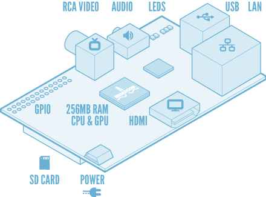

It is a small and exciting project just for fun as “Porting Inferno OS to Raspberry Pi”. Of course to run it there as native, not hosted. It was always declared that this OS is very simple for porting to new platforms, so let’s just research this and reach new distilled experiences of system programming. Also this OS is very small, simple and easy to tweak for research purposes.
It is organized it as some set of small labs with very detailed steps of what is done to reach results and make everything easy to reproduce.
To keep track of codebase of the Inferno OS on Raspberry Pi Labs we created the google code project to keep the repository and do other stuff related to the labs managements:
Links: https://github.com/yshurik/inferno-rpi
Season 1: Road to boot…
| N |
Name |
| 1. |
Lab 1, Compiler |
| 2. |
Lab 2, Hardware |
| 3. |
Lab 3, R-Pi Booting process |
| 4. |
Lab 4, Loading kernel |
| 5. |
Lab 5, Hello World |
| 6. |
Lab 6, Compile something |
| 7. |
Lab 7, linking, planning next |
| 8. |
Lab 8, memory model |
| 9. |
Lab 9, coding assembler part |
| 10. |
Lab 10, Bss, memory pools, malloc |
| 11. |
Lab 11, _div, testing print |
| 12. |
Lab 12, interrupts, part 1 |
| 13. |
Lab 13, interrupts, part 2 |
| 14. |
Lab 14, interrupts, part 3 |
| 15. |
Lab 15, Eve, Hello World from Limbo! |
Season 2: Close to hardware…
| N |
Name |
| 16. |
Lab 16, Adding clocks, timers, converging to 9pi codes |
| 17. |
Lab 17, initialization of MMU |
| 18. |
Lab 18, we have a screen! |
| 19. |
Lab 19, keyboard through serial, fixes to get Ls |
| 20. |
Lab 20, devusb, usbdwc and firq, first step to usb |
| 21. |
Lab 21, porting usbd, fixed in allocb, see usb in actions |
| 22. |
Lab 22, Usb keyboard |
| 23. |
Lab 23, hard disk or SD card |
| 24. |
Lab 24, network, part 1 |
| 25. |
Lab 25, network, part 2 |
| 26. |
Lab 26, floating point |